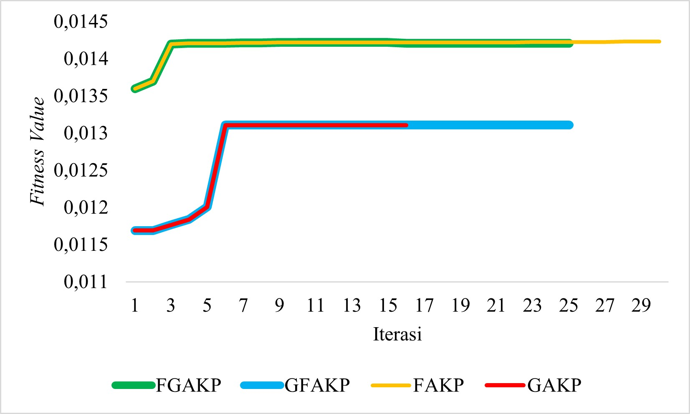
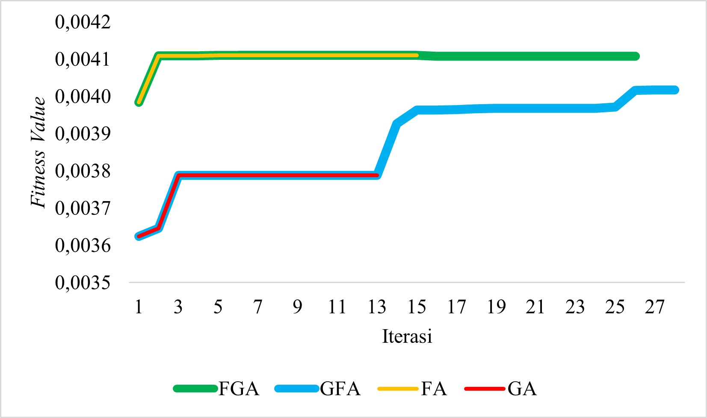
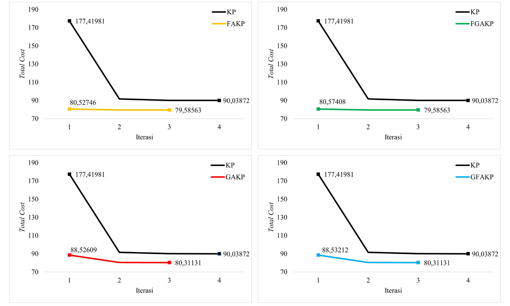
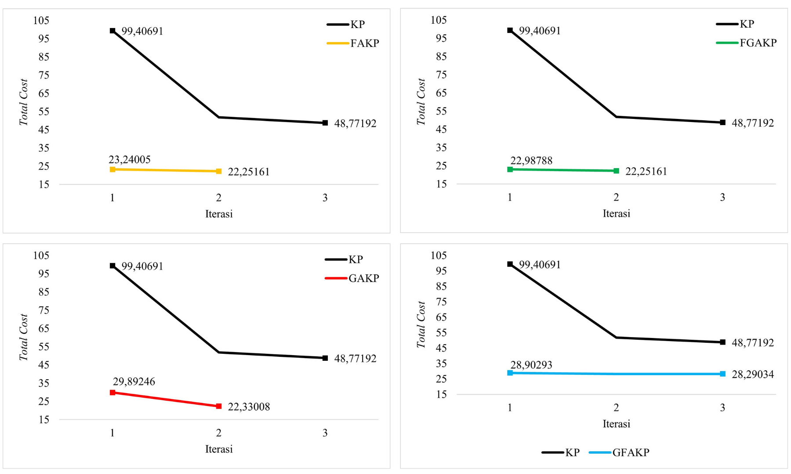
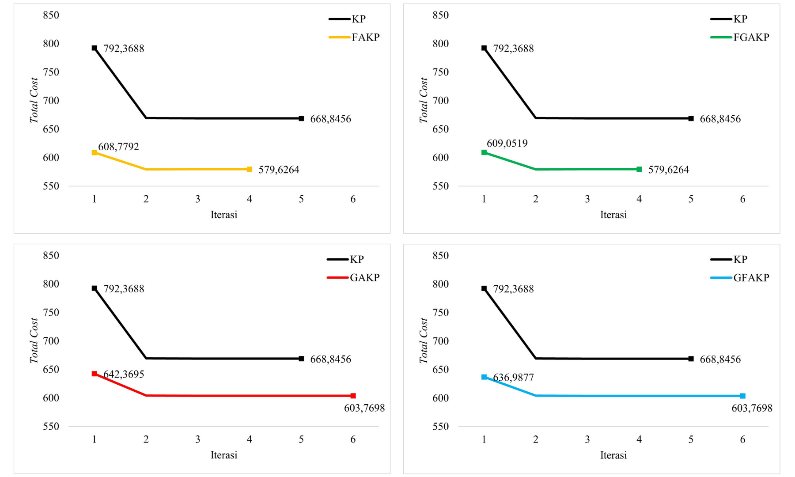
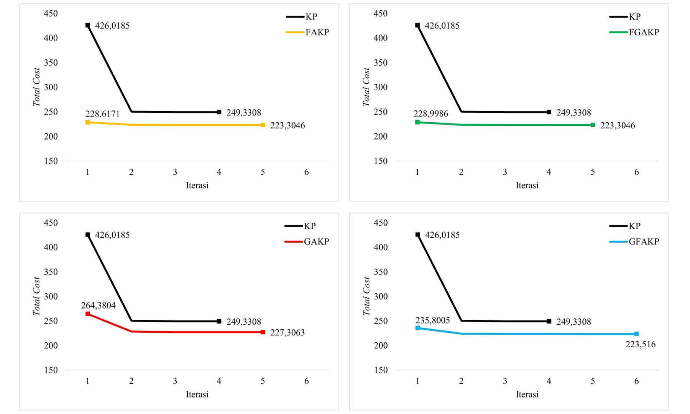

Pengembangan Metode Pengelompokan Data Campuran dengan Hybrid Firefly-Genetic Algorithm K-Prototype
Studi Kasus : Pengelompokan Desa di Provinsi Kalimantan Utara Tahun 2024
Penelitian skripsi Annisa Rahma
Dosen Pembimbing : Rani Nooraeni, S.S.T., M.Stat.
Pendahuluan
K-Prototype merupakan metode clustering berbasis partitioning yang memiliki kemampuan untuk menangani data campuran bertipe numerik dan kategorik. Akan tetapi, K-Prototype sensitif terhadap penentuan inisialisasi centroid klaster dan cenderung mengalami konvergensi prematur sehingga menghasilkan solusi optimum lokal. Selain itu, penggunaan inisialisasi centroid secara random dapat mengakibatkan hasil clustering yang terbentuk menjadi berbeda-beda.
Firefly Algorithm (FA)
Sangat ampuh dalam pencarian lokal, tetapi tidak dapat melakukan pencarian secara global dengan baik.
Genetic Algorithm (GA)
Memiliki kemampuan pencarian global yang baik, tetapi cenderung mengalami konvergensi prematur akibat rendahnya eksploitasi keragaman dalam populasi.
Hibridisasi FA dan GA membuka peluang untuk pencarian lebih baik dalam ruang solusi besar, konvergensi yang lebih cepat, serta keseimbangan fase eksplorasi-eksploitasi dalam menghasilkan inisialisasi centroid yang optimal pada pengelompokan data campuran dengan algoritma K-Prototype (KP).
Tujuan
1
Menghasilkan inisialisasi centroid yang optimal pada algoritma K-Prototype (KP) menggunakan algortima Firefly Algorithm (FA) dan Genetic Algorithm (GA) baik secara tunggal maupun hybrid
100%2
Membandingkan performa hasil pengelompokan data campuran dengan algoritma K-Prototype (KP) menggunakan inisialisasi centroid hasil optimasi dan tanpa optimasi pada data uji coba
100%3
Mengimplementasikan algoritma pengelompokkan terbaik untuk menggambarkan kondisi kemajuan dan kemandirian desa di Provinsi Kalimantan Utara berdasarkan indikator IDM tahun 2024
100%Tahapan Penelitian
Cross-Industry Standard Process for Data Mining (CRISP-DM)
Penelitian ini menggunakan metodologi penelitian berbasis CRISP-DM agar setiap tahapan penelitian terstruktur dan terdefinisi dengan jelas serta efisien
Business Understanding
Inisialisasi centroid yang optimal diharapkan dapat meningkatkan nilai fitness dan kualitas klaster, mempercepat konvergensi karena posisi awal yang mendekati solusi ideal, serta menghasilkan klaster yang lebih seimbang dan representatif
Data Understanding
Penelitian ini menggunakan lima dataset bertipe data campuran numerik dan kategorik yang terdiri dari 4 dataset untuk data uji coba dan 1 dataset untuk data studi kasus
- Dataset Zoo yang terdiri dari 1 atribut numerik dan 15 atribut kategorik dengan 101 observasi
- Dataset Acute Inflammations yang terdiri dari 1 atribut numerik dan 5 atribut kategorik dengan 120 observasi
- Dataset Credit Approval yang terdiri dari 6 atribut numerik dan 9 atribut kategorik dengan 690 observasi
- Dataset Heart Disease yang terdiri dari 6 atribut numerik dan 7 atribut kategorik dengan 303 observasi
- Dataset Potensi Desa berdasarkan indikator IDM yang terdiri dari 17 atribut numerik dan 23 atribut kategorik dengan 484 observasi
Data Preparation
Dilakukan pembersihan data melalui penanganan missing value, observasi kewajaran outlier, transformasi data, serta konsistensi label kategorik. Pada penanganan missing value, digunakan metode mean imputation untuk variabel numerik dan mode imputation untuk variabel kategorik
Modelling
Penelitian ini menggunakan lima jenis algoritma clustering yang diterapkan pada data uji coba untuk memperoleh algoritma clustering terbaik yang selanjutnya diimplementasikan pada pengelompokkan desa di Provinsi Kalimantan Utara berdasarkan indikator IDM dengan data Podes 2024 sebagai studi kasus
- K-Prototype (KP)
- Firefly Algorithm K-Prototype (FAKP)
- Genetic Algorithm K-Prototype (GAKP)
- Hybrid Firefly-Genetic Algorithm K-Prototype (FGAKP)
- Hybrid Genetic-Firefly Algorithm K-Prototype (GFAKP)
Evaluation
Pada proses inisialisasi centroid, fitness value dan waktu komputasi digunakan sebagai metode evaluasi dalam penelitian ini. Kemudian, saat dilakukan pengujian hasil clustering dari setiap algoritma, Total Cost (TC) dan Indeks CV digunakan sebagai metrik evaluasi utama dengan jumlah iterasi dan waktu komputasi sebagai metrik evaluasi pendukung
Deployment
Pembuatan Web Story sederhana sebagai media visualisasi hasil penelitian. Web Story diharapkan dapat membantu mengomunikasikan informasi kompleks secara ringkas dan informatif
Inisialisasi Centroid
Diimplementasikan algoritma FAKP, GAKP, FGAKP, dan GFAKP pada data uji coba untuk menghasilkan solusi terbaik yang akan menjadi inisialisasi centroid algoritma K-Prototype (KP)
Interpretasi
Secara keseluruhan, fitness value FAKP dan FGAKP berada di atas GAKP dan GFAKP pada seluruh data uji coba. Terdapat peningkatan fitness value GFAKP setelah implementasi sekuensial FA pada dataset Acute Inflammations, Credit Approval, dan Heart Disease, tetapi nilainya masih berada di bawah FAKP dan FGAKP. Implementasi algoritma FGAKP dapat menghasilkan fitness value setara FAKP dengan waktu komputasi yang jauh lebih singkat dibandingkan FAKP.
Dataset Zoo
Fitness Value dan Jumlah Iterasi
| FAKP | GAKP | FGAKP | GFAKP |
|---|---|---|---|
| (1) | (2) | (3) | (4) |
| 22,712 | 0,233 | 6,978 | 5,981 |
Waktu Komputasi (menit)
Dataset Acute Inflammations

Fitness Value dan Jumlah Iterasi
| FAKP | GAKP | FGAKP | GFAKP |
|---|---|---|---|
| (1) | (2) | (3) | (4) |
| 9,906 | 0,191 | 5,267 | 6,675 |
Waktu Komputasi (menit)
Dataset Credit Approval

Fitness Value dan Jumlah Iterasi
| FAKP | GAKP | FGAKP | GFAKP |
|---|---|---|---|
| (1) | (2) | (3) | (4) |
| 95,470 | 0,724 | 31,449 | 32,004 |
Waktu Komputasi (menit)
Dataset Heart Disease
Fitness Value dan Jumlah Iterasi
| FAKP | GAKP | FGAKP | GFAKP |
|---|---|---|---|
| (1) | (2) | (3) | (4) |
| 22,712 | 0,233 | 6,978 | 5,981 |
Waktu Komputasi (menit)
Evaluasi
Dari evaluasi data uji coba, dapat diketahui bahwa algoritma hybrid FGAKP menunjukkan performa paling unggul dibandingkan metode lainnya. Keunggulan ini terlihat dari kemampuan FGAKP menghasilkan nilai TC dan Indeks CV yang lebih optimal, jumlah iterasi yang relatif lebih sedikit, serta efisiensi waktu komputasi. Salah satu faktor utama yang mendukung keunggulan algoritma ini adalah proses inisialisasi centroid yang dioptimalkan dengan algoritma hibrida FA dan GA. Oleh karena itu, FGAKP merupakan algoritma clustering terbaik dalam penelitian ini
Total Cost (TC)
| Dataset | KP | FAKP | GAKP | FGAKP | GFAKP |
|---|---|---|---|---|---|
| (1) | (2) | (3) | (4) | (5) | (6) |
| Zoo | 90,0387 | 79,5856 | 80,3113 | 79,5856 | 80,3113 |
| Acute Inflammations | 48,7719 | 22,2516 | 22,3301 | 22,2516 | 28,2903 |
| Credit Approval | 668,8456 | 579,6264 | 603,7698 | 579,6264 | 603,7698 |
| Heart Disease | 249,3308 | 223,3046 | 227,3063 | 223,3046 | 223,5160 |
Indeks Categorical Variance (CV)
| Dataset | KP | FAKP | GAKP | FGAKP | GFAKP |
|---|---|---|---|---|---|
| (1) | (2) | (3) | (4) | (5) | (6) |
| Zoo | 0,80140 | 0,88317 | 0,87017 | 0,88317 | 0,87017 |
| Acute Inflammations | 0,15984 | 0,31092 | 0,30644 | 0,31092 | 0,30831 |
| Credit Approval | 0,01333 | 0,01849 | 0,01666 | 0,01849 | 0,01666 |
| Heart Disease | 0,01866 | 0,01947 | 0,01835 | 0,01947 | 0,01915 |
Jumlah Iterasi
| Dataset | KP | FAKP | GAKP | FGAKP | GFAKP |
|---|---|---|---|---|---|
| (1) | (2) | (3) | (4) | (5) | (6) |
| Zoo | 4 | 3 | 3 | 3 | 3 |
| Acute Inflammations | 3 | 2 | 2 | 2 | 3 |
| Credit Approval | 5 | 4 | 6 | 4 | 6 |
| Heart Disease | 4 | 5 | 5 | 5 | 6 |
Waktu Komputasi
| Dataset | KP | FAKP | GAKP | FGAKP | GFAKP |
|---|---|---|---|---|---|
| (1) | (2) | (3) | (4) | (5) | (6) |
| Zoo | 0,688 | 0,413 | 0,409 | 0,403 | 0,405 |
| Acute Inflammations | 0,480 | 0,133 | 0,127 | 0,120 | 0,286 |
| Credit Approval | 1,571 | 1,113 | 1,641 | 1,105 | 1,675 |
| Heart Disease | 0,938 | 0,979 | 0,975 | 0,973 | 1,149 |
Dataset Zoo
Perubahan Total Cost per Iterasi Dataset Zoo 
Dataset Acute Inflammations
Perubahan Total Cost per Iterasi Dataset Acute Inflammations 
Dataset Credit Approval
Perubahan Total Cost per Iterasi Dataset Credit Approval 
Dataset Heart Disease
Perubahan Total Cost per Iterasi Dataset Heart Disease 
Pengelompokan Desa Berdasarkan Indikator IDM di Provinsi Kalimantan Utara Tahun 2024 dengan Algoritma FGAKP
Algoritma clustering terbaik, yaitu Firefly-Genetic Algorithm K-Prototype (FGAKP) diimplementasikan dalam mengelompokkan kondisi kemajuan dan kemandirian desa di Provinsi Kalimantan Utara berdasarkan indikator Indeks Desa Membangun (IDM) dengan data Potensi Desa (Podes) tahun 2024

Desa Mandiri
Desa-desa pada kelompok ini secara konsisten menunjukkan ketahanan sosial, ekonomi, serta lingkungan yang sangat baik
Desa Maju
Desa-desa pada kelompok ini sudah memiliki ketahanan yang baik pada keseluruhan aspek, namun masih perlu ditingkatkan kuantitas dan kualitasnya
Desa Berkembang
Desa-desa pada kelompok ini sudah baik dalam aspek dasar, seperti kesehatan, koperasi dan badan usaha milik desa, pembangunan kelompok pertokoan, keterbukaan wilayah, infrastruktur jalan, transportasi umum, serta infrastruktur TI. Akan tetapi, masih diperlukan peningkatan pada aspek-aspek penunjang
Desa Menuju Berkembang
Desa-desa pada kelompok ini memiliki karakteristik yang hampir menyamai desa pada klaster Desa Berkembang, tetapi masih perlu pengembangan yang lebih intensif terutama dalam aspek pelayanan dasar
Desa Tertinggal
Desa desa pada kelompok ini memiliki ketahanan yang sangat kurang memadai, baik dari aspek sosial, ekonomi, maupun lingkungan
Kabupaten Bulungan
Kabupaten Bulungan didominasi oleh kelompok desa Maju dan Mandiri. Selain itu tidak terdapat desa yang terkategori Tertinggal ataupun Menuju Berkembang. Kondisi ini mencerminkan keberhasilan pembangunan desa di Kabupaten Bulungan, terutama dalam hal pemenuhan indikator kemandirian dan kemajuan desa seperti infrastruktur, layanan dasar, dan ekonomi lokal.
Selanjutnya, pemerintah daerah dapat memfokuskan intervensinya pada desa-desa yang masih berkembang agar dilakukan percepatan menuju desa maju atau mandiri.

Kabupaten Malinau
Kabupaten Malinau didominasi oleh kelompok desa Menuju Berkembang dan Berkembang. Artinya, sebagian besar desa di Kabupaten Malinau telah memiliki tingkat perkembangan yang cukup baik serta berada dalam fase transisi menuju pembangunan desa yang lebih optimal.
Kabupaten Malinau memiliki peluang besar untuk meningkatkan kesejahteraan masyarakat desa apabila ditunjang oleh kebijakan dan intervensi yang tepat sasaran. Selain itu, pemerintah juga perlu memetakan secara spesifik tantangan yang dihadapi 8 desa yang tergolong tertinggal agar intervensi yang dilakukan lebih tepat sasaran khususnya dalam pemenuhan layanan kebutuhan dasar.

Kabupaten Nunukan
Kabupaten Nunukan didominasi oleh kelompok desa Tertinggal. Hal ini menunjukkan bahwa masih banyak desa yang menghadapi tantangan serius dalam hal infrastruktur dasar, pelayanan publik, serta pengembangan ekonomi lokal. Selain itu, proporsi Desa Berkembang juga mendominasi di Kabupaten Nunukan. Artinya, sebagian besar desa masih dalam tahap awal atau menengah dalam proses pembangunan desa dan peningkatan kualitas hidup masyarakatnya.
Pemerintah dapat berfokus pada upaya percepatan pembangunan di desa Tertinggal dan Berkembang. Pendekatan pembangunan yang inklusif dan berbasis potensi lokal sangat penting agar kesenjangan antar-desa dapat diminimalisasi dan kemajuan yang lebih merata dapat tercapai di Kabupaten Nunukan.

Kabupaten Tana Tidung
Kabupaten Tana Tidung didominasi oleh kelompok desa Mandiri dan Maju. Hal ini menujukkan bahwa mayoritas desa di Kabupaten Tana Tidung telah berhasil memenuhi berbagai indikator kemajuan dan kemandirian desa, baik dari aspek sosial, ekonomi, maupun lingkungan.
Tidak ada desa yang terkategori Tertinggal serta hanya sebagian kecil desa yang terkategori Menuju Berkembang dan Berkembang. Hal ini mengindikasikan bahwa pemerataan pembangunan desa di Tana Tidung sudah berjalan dengan baik dan relatif merata.

Kota Tarakan
Keseluruhan desa/kelurahan di Kota Tarakan terkategori Mandiri. Tidak terdapat satupun desa yang masuk dalam kategori Maju, Berkembang, Menuju Berkembang, ataupun Tertinggal.
Kondisi ini mencerminkan bahwa Kota Tarakan telah memiliki pembangunan desa yang sangat merata dan berdaya, terutama dalam aspek sosial, ekonomi, serta lingkungan. Kemandirian desa di Tarakan juga menandakan tingginya kualitas hidup masyarakat dan efektivitas program pembangunan lokal.